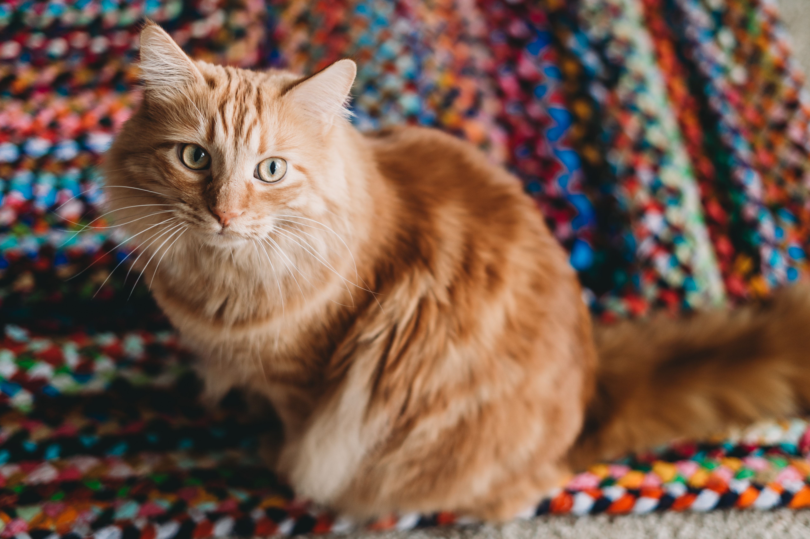
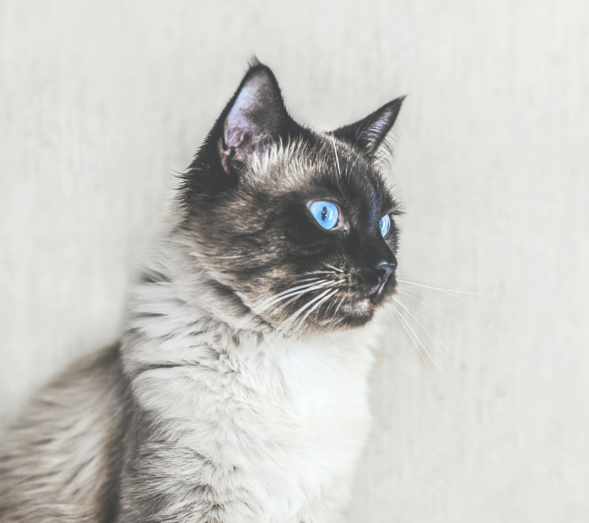
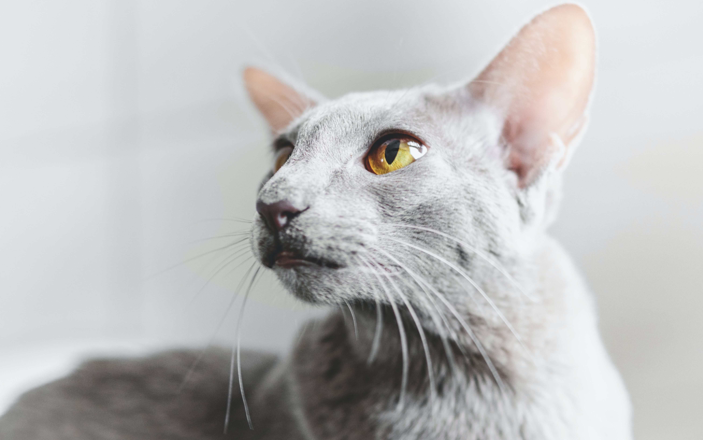
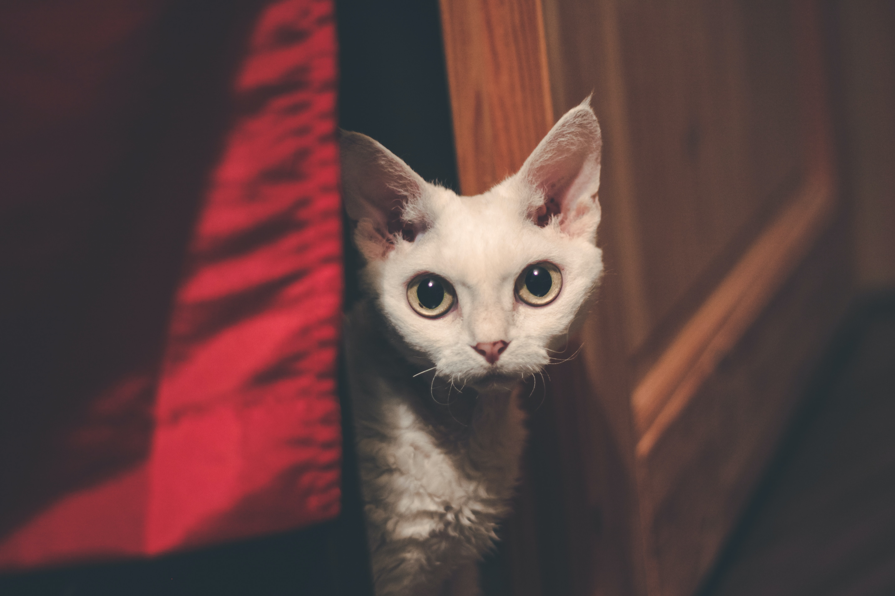
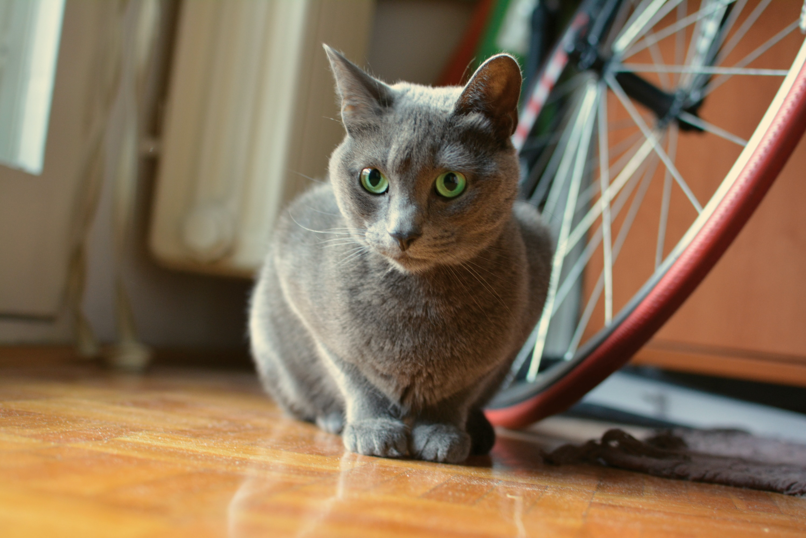
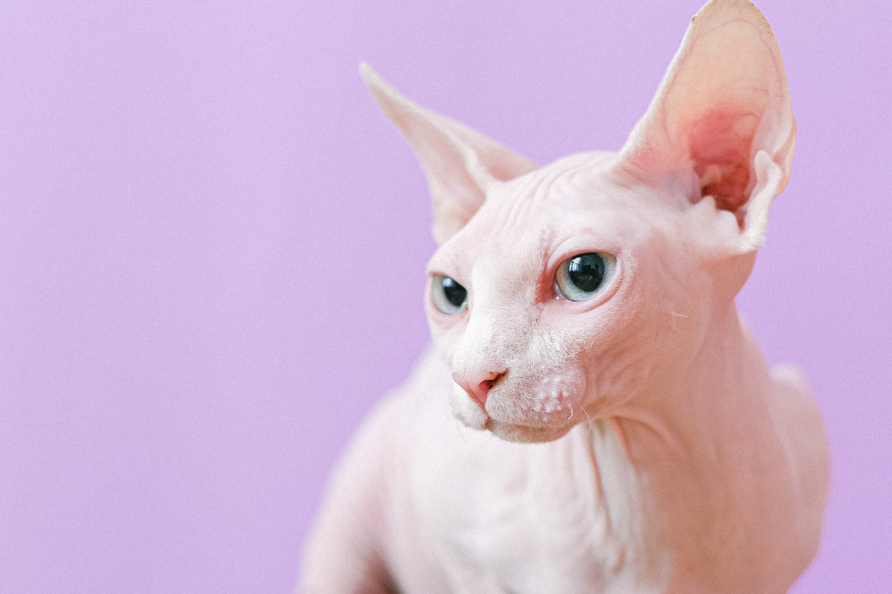
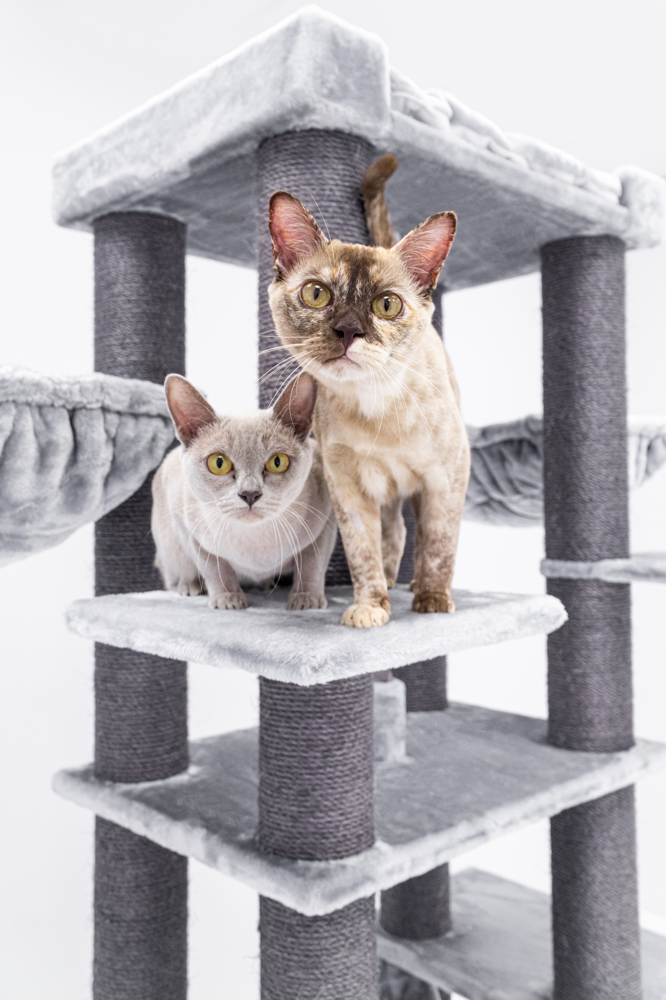

Cats are the second most popular pet in the US, with around 31.9 million US households owning a cat. However, approximately 10 to 20% of the human population are allergic to cats, meaning it's also one of the most common allergies. Cat allergies can range from mild to severe, and many people, especially those with milder symptoms, are still interested in owning a cat. So, what are the best breeds to look into if you have cat allergies?
What causes cat allergies?
It’s a common misconception that cat allergies are caused by cat fur, which leads people to believe that hairless cats are the best cat breed for allergies. However, the true cause of cat allergies is a protein called Fel d 1, which is found in cat saliva. After cats groom themselves, the saliva dries onto their fur, which then turns the Fel d 1 protein airborne when the cat eventually sheds its coat, causing allergic reactions in some people.
The best cats for people with allergies are those that produce less Fel d 1 or shed less hair, thereby spreading less allergens around. Aside from breed, male cats, especially intact males, produce more Fel d 1 on average. Hence, it’s advisable to adopt female cats if you want to minimize the airborne Fel d 1. We’ve compiled a list of the best cat breeds for you to adopt to minimize the chance of an allergic reaction.
Best breeds for cat allergies
1. Siberian

Despite the Siberian cat’s long fur and shedding patterns, there is research to suggest that Siberian cats secrete less Fel d 1 compared to the average cat. The Siberian is the only breed known to secrete less Fel d 1, making it the best cat breed for allergies. Before you commit to a Siberian cat, know that they are a high maintenance breed, as their fur requires regular brushing.
2. Balinese & Javanese

These low maintenance Siamese sub-breeds are known to be among the cat breeds that shed the least. Their lack of shedding contributes to their low maintenance, but also deposits less Fel d 1 into the air.
3. Oriental Shorthair

The Oriental Shorthair does not, on average, secrete less Fel d 1 than other breeds. However, it does shed considerably less, meaning that less Fel d 1 becomes airborne.
4. Devon & Cornish Rex

Both the Devon and the Cornish Rex have short, thin coats that are not prone to shedding, so less Fel d 1 becomes airborne.
5. Russian Blue

The Russian Blue does not shed as much as other breeds, minimizing the Fel d 1 released into the air. Additionally, its fur is thick, trapping the Fel d 1, making the Russian Blue one of the best cat breeds for allergies.
6. Sphynx

Do not let the Sphynx’s very short coat fool you, these cats are no less allergy-causing than any other cat on this list. Did know that Sphynx cats are generally higher maintenance than other cats, as their skin needs to remain free of oil?
7. Burmese

Burmese cats are closely related to the Balinese and Javanese breeds, as they all descend from Siamese cats. Burmese cats shed very little, so you will be exposed to minimal airborne Fel d 1
What if I still have cat allergies?
It is important to know that even if your cat is among the best cat breeds for allergies, there are numerous other factors that influence the release of airborne Fel d 1. There are a few courses of action you can take at this point. You can wash your cat more regularly to wash away the Fel d 1, but not all cats are receptive to being washed often. You can buy antihistamines from your local pharmacy to relieve the symptoms, but antihistamines do not solve the root cause of your allergic reaction.